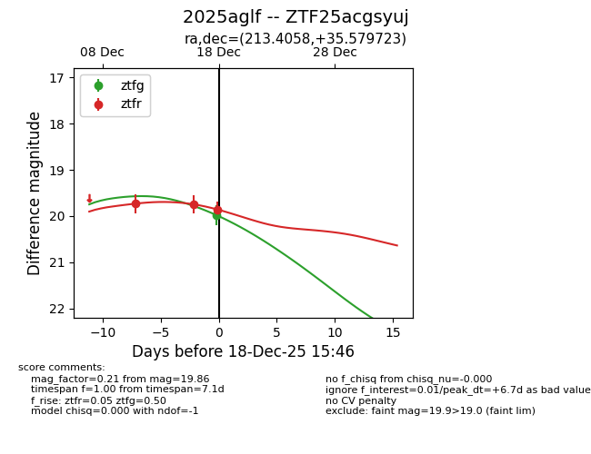
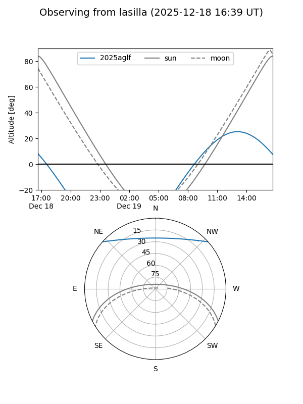
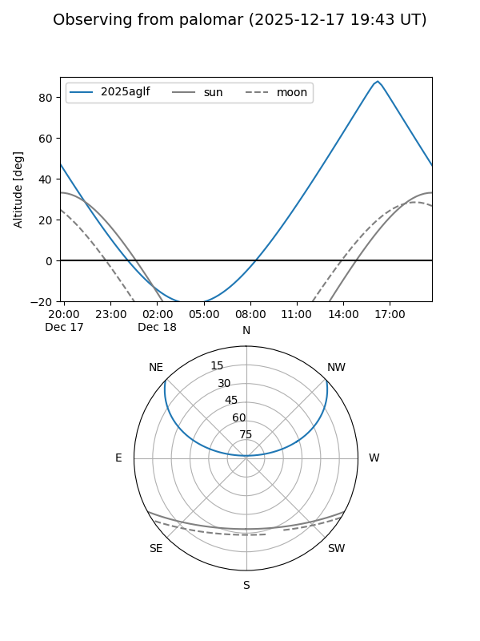
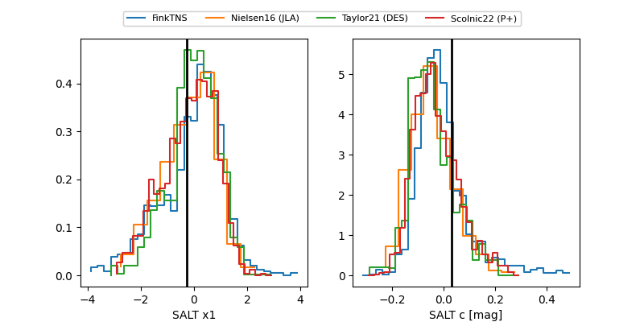

2025aglf
Target 2025aglf at 2025-12-18 15:47
Aliases and brokers:
FINK: fink-portal.org/ZTF25acgsyuj
Lasair: lasair-ztf.lsst.ac.uk/objects/ZTF25acgsyuj
ALeRCE: alerce.online/object/ZTF25acgsyuj
TNS: wis-tns.org/object/2025aglf
YSE: ziggy.ucolick.org/yse/transient_detail/2025aglf
alt names
ZTF25acgsyuj (ztf,fink_ztf)
2025aglf (tns,yse)
Coordinates:
equatorial (ra, dec) = 213.4058,+35.57972
equatorial (HMS+DMS) = 14:13:37.39,+35:34:47.00
galactic (l, b) = (63.7918,+70.57830)
Photometry
last ztfg=19.98, ztfr=19.86
1 ztfg, 3 ztfr detections
Lightcurve

Visibility


Additional plots
